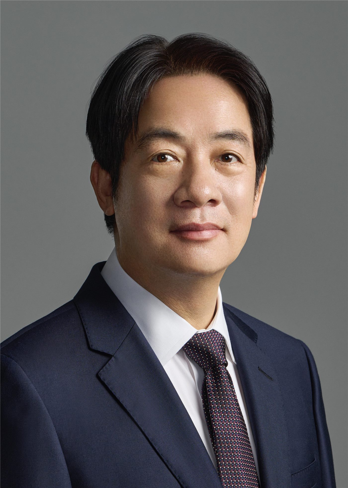

橋대만
대만라이칭더 대만 총통 취임 2주년… '인재·민생' 국정 행보
취임 2년을 맞은 라이칭더 총통이 평화·안정과 민생을 국정 기조로 제시했다. 대만은 인재 유치 제도를 본격 시행 중이다.
취임 2년을 맞은 라이칭더 총통이 평화·안정과 민생을 국정 기조로 제시했다. 대만은 인재 유치 제도를 본격 시행 중이다.

해외 화인 청년의 취업·정착 문이 넓어졌다. 졸업생은 허가 없이 2년 근무, 전문인력은 1년 거주 후 영주 신청.

대만 행정원이 군인보험조례 개정에 나섰다. 육아휴직(육아유직정) 수당 지급 대상 자녀 연령을 만 7세까지로 늘리고, 군인·공무원·교사 부부는 합산 최대 18개월까지 수당을 받을 수 있게 된다.

대만 가권지수가 장중 1456포인트의 변동폭을 보인 끝에 76포인트 하락으로 마감했다. 3대 기관은 353억 대만달러 매도 우위였다.

진먼·마쭈와 중국 본토를 잇는 '소삼통' 항로의 무료 수하물 기준이 절반으로 줄어 이용객 반발이 일고 있다.

라이칭더 총통이 감찰원장 후보로 의사 출신 인권운동가 천융싱(陳永興)을 지명했다. 감찰위원에는 린리잉(林麗瑩)을 추가 지명했다.

라이칭더 총통이 올해 중앙정부 총예산안 심의가 6월에도 위원회 단계에 머물러 있다며 입법원의 조속한 처리를 촉구했다.

수동부품 대장주 궈쥐(國巨)가 935억 대만달러의 거래대금으로 TSMC를 제치고 거래대금 1위에 올랐다. 파운드리 롄뎬(聯電·UMC)도 급등해 85만 주주가 함박웃음을 지었다.
마약 운전 사고가 끊이지 않자 대만 입법원에서 여야가 앞다퉈 처벌 강화 법안을 내놓고 있다.

지룽항에서 클로로술폰산 누출로 연기가 발생해 한때 소동이 빚어졌다. 업체 측은 가스킷 노화에 빗물이 닿아 생긴 연무로 추정했다.

정리원(鄭麗文) 국민당 주석이 추진하던 미국 방문 중 백악관 측 인사 면담이 성사되지 않으면서, 무산 배경을 두고 여야 공방이 벌어졌다.

타이중 펑위안 일가족 5명 사망 사건 재판에서 이른바 '리 단장'의 해명이 거짓으로 드러나며 법정 공방이 격화됐다.